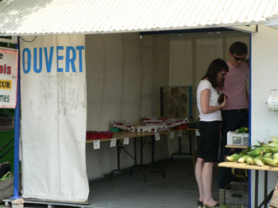
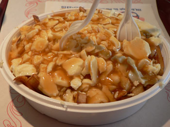

The Lake
I apologize for the utter dearth of activity on Eat this summer. It’s been a whirlwind of houseguests, vacations, late nights at work, and crippling neck spasms. Not to mention hot weather and a small kitchen, keeping me from preparing anything elaborate. I think it’s ok, though, to have a summer break online. No one wants to hear about my simple dinners of boiled pasta, and I don’t care to bore anyone with them.
Since Wednesday, Nathan and I have been at the Lake, which is how my family refers to an old cabin that we’ve had for a few generations, way upstate, at the top of the Adirondacks on Chateaugay Lake. We went every summer when I was a kid, and then I took a break of about ten years through college and young adulthood. This was the first time I’d been there in hot weather in ages, and I had forgotten how perfect it can be. It’s not a fancy house, and there are no fancy people around. It’s quiet, old, and genuinely rustic, and the lake seems so clean as to be potable. I feel extremely lucky to be able to spend time in the house, especially when it’s filled to the gills with family I hardly ever see, as it was this weekend.
Large groups present large challenges in the kitchen, and the occasion for this gathering was my grandparents’ joint 75th birthday party, putting extra pressure on the cooks. Mom, Aunt Sue, Uncle Ron, Aunt Mimi, and I slaved away (the ladies more than myself, admittedly) on cakes, pies, hummus, salads, and a Mozambican dish of stewed collard greens. The night before, Uncle Ron made a few gallons of his famous tomato sauce, which he always does in these situations, as it’s perfect for such big groups. The night before that, Billy and I marinated a ton of chicken in soy sauce and vinegar and grilled it to a smoky blackness. No matter what you cook, it disappears from the table in minutes, since everyone at the Lake is hungry all the time.

On Thursday, a few of us took a day trip into Canada for groceries and junk food. I’m probably the last person in New York to have poutine, and certainly the last person in my family. They’ve been making pilgrimages up there for years. Nathan and I decided to see what the big deal was at Grégoire, a notorious house of poutine outside of Montréal.

It tasted exactly how it looks: like thick cheese curds and thick beef gravy on top of crispy fries. It’s good for about five bites, and then you start eating around the cheese curds, and then you start eating around the gravy, and then you kind of feel like you need to go jump in the lake. But I was glad to finally try it.
This will be another busy month, with Mom arriving later this week and staying through the following week, and another guest from France arriving right after her. But we will both try to keep the cobwebs off of our little blog until cooking season rolls around, as it will before we know it. I hope everyone is having a great summer!
Comments
The hamburgers at Grégoire are the main attraction for me. One bowl of poutine in a lifetime is sufficient, but I go back whenever I’m nearby for the burgers.
Where was mom for the birthday party? Or are they not her parents? I am guessing that your mom had you when she was quite young if her parents are 75. My dad is going to be 75 and I have a four year old..although I had him on the later end (normal by nyc standards!). When Izzy is your age, my dad be 95..which is crazy for me to imagine.
p.s. I have never tried poutine either but I am not itching to do so!
Hi, izzy’s mama – yes, I was there for the party! I was in the kitchen with my sister and sister-in-law, cooking and baking. And I wasn’t that young when Leland was born, 27. My parents were very young when I was born, only 20, like they did back in the 50s.
And I don’t eat poutine myself, although I do like the way they make fries in Quebec.
Ha! I loved your description of eating poutine. I think it sounds just right. Your summer is sounding lovely – enjoy every minute! xx
Thinking of you, and of water:
http://www.nytimes.com/2007/08/01/opinion/01wed2.html?ex=13437072
Hi, zp! Leland and I both read that article about bottled water and felt completely vindicated. Bottled water is the biggest scam of the new millennium and emblematic of the physical and moral turpitude of our times.
Add a comment